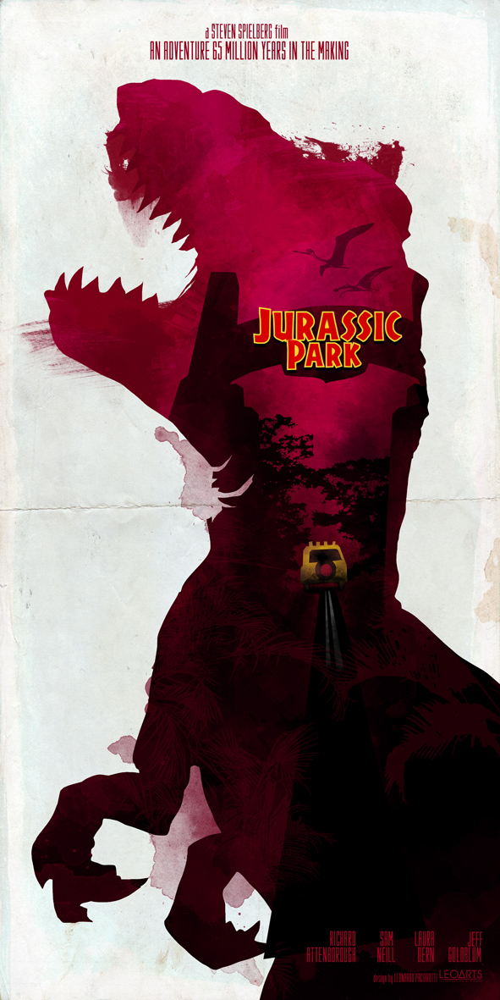

About Me
A Slightly Less Brief Intro to Me
As you hopefully read earlier, my name is Eoghan and I'm a passionate first year computer science student in UCC.
I was lucky as I came from a family of computer scientists, so I've grown up surrounded by technology which formed my strong passion for all things electronic from a very young age.
I knew I wanted to pursue a career in computing since I knew what computing was. All that changed as I grew up was what section of computing I was interested in. As of now it is still undetermined, but AI and machine learning have been an interest of mine for some time; especially with the direction the world is heading in.
I love learning computing because it gives you so much freedom. If you can use a computer, you have access to the largest database of information in the entirety of human history. But you don't need to study computing to be able to use a computer. The part I like is knowing how to code. Learning to program is like learning to walk. You could crawl everywhere, but why crawl when you can run.
My Interests
I don't have many hobbies, but the few that I have I am very passionate about. They include:
- Programming
- Playing Chess (badly)
- Annoying my girlfriend
- Movies
My Favourite Movies
-
The Christopher Nolan Batman Trilogy
(2005 - 2012)
This is my favourite movie trilogy of all time. All three movies in the trilogy are perfect.
The first one is a brilliant introduction to the character of Christian Bale's Batman. The second one features the best rendition of the Joker in any media played by the late Heath Ledger. And last but not least, the third and final movie, is a fittingly beautiful ending to the trilogy.
-
 Jurassic Park
(1993)
This is my favourite film of all time. I've lost count how many times I've watched it. I've watched it every time it has been brought back to the cinema, which is three viewings now I think.
Another interest of mine is dinosaurs and so a movie about people building a zoo for dinosaurs fascinated me from the moment I heard about it.
The other movies in the franchise are good too, but none of them come close to the original.